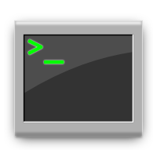

Weighted Attribute Grammars
ongoing research activities
Taxonomy of Inconsistency Patterns
evidence-based taxonomy
(2026)
BabyCobol
develop industrial parsers in a controlled environment
(2019–2021)
Engage!
event-based parser generator
(2019–2021)
Parsing in a Broad Sense
bx megamodel of (un)parsing flows & structures
(2014)
BibSLEIGH
browseable SLE+ bibliography
(2014–2020)
GrammarLab
a grammar manipulation library for Rascal
(2013–2015)
Software Language Processing Suite
SLE knowledge aggregator
(2008–2012)
(…work in collecting and aggregating the entire portfolio is in progress, stay tuned…)
The page is maintained by
Dr. Vadim Zaytsev
a.k.a. @
grammarware
. Dim tiles refer to inactive projects. Last updated: March 2026.